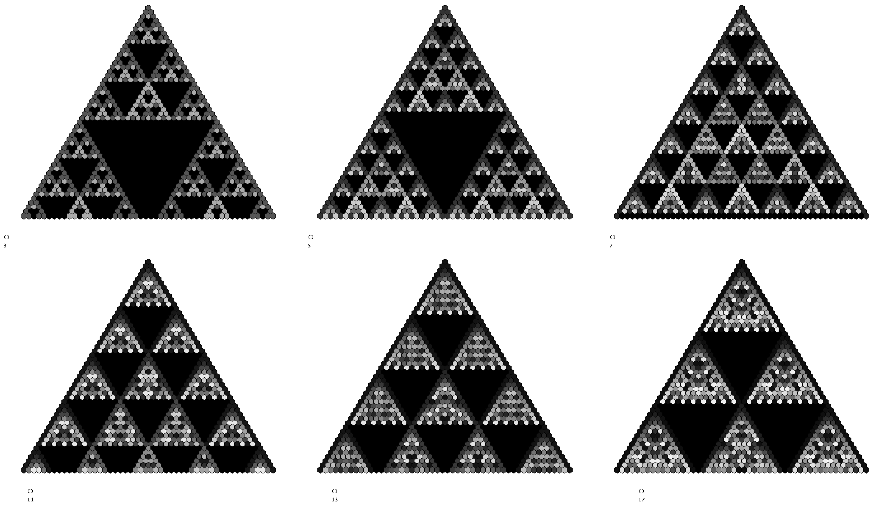
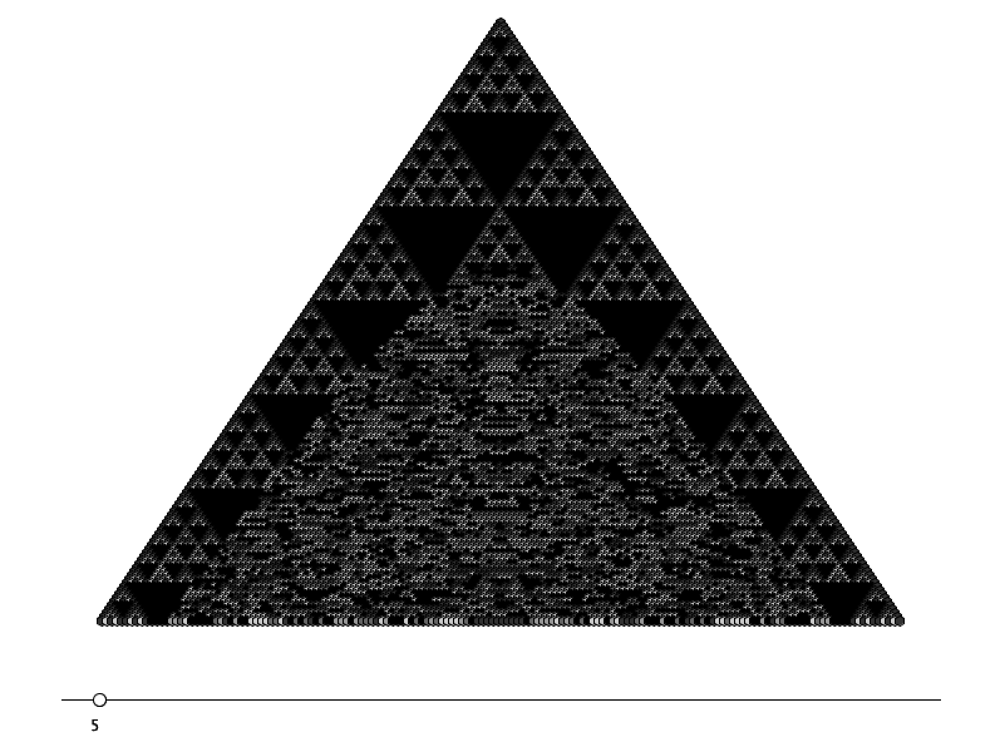
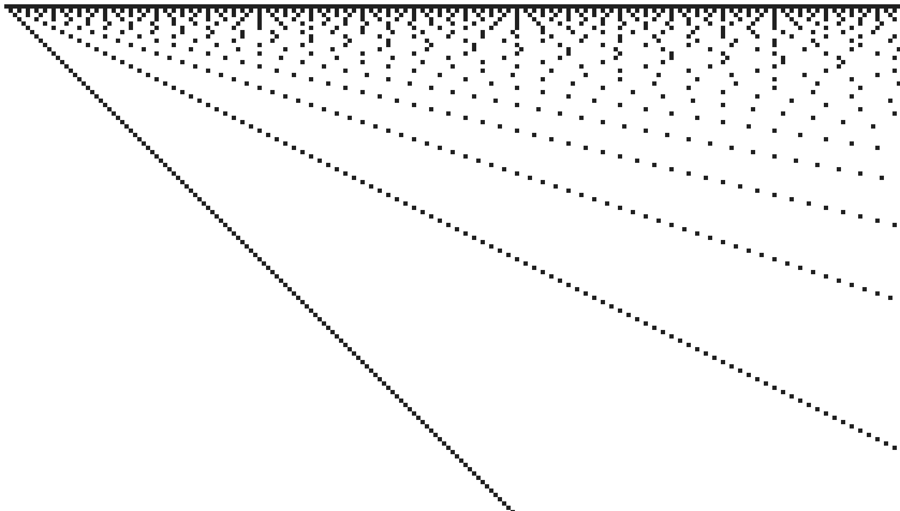
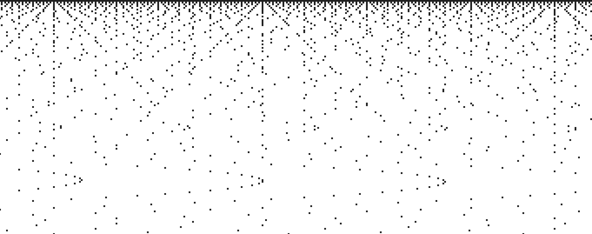
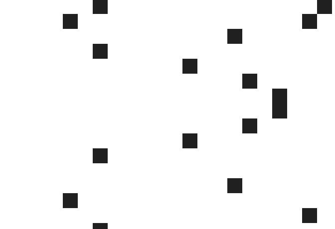

our growing uselessness and the importance of love
flow and the politics of fear
postmodern paranoia and the death of the free market
the importance of rhetoric and moving forward
solving the eight queens problem with mutation and simulated annealing
modular arithmetic and dynamic programming
a generalized solution with least residues
fun with parabolic structures
fun with the fundamental theorem of arithmetic
Feminist Nude Photography
Promoting World Peace
Food Science and Multicultural Understanding


Automation and Human Value
Towards the end of God Bless You, Mr. Rosewater, Vonnegut explains that we must learn to value humans for being humans, not for what they can produce. In the context of growing automation, his words ring true mora than ever.
The debate around the living wage has brought to light a number of issues related to human survival and flourishing. For one, we have more than enough resources and capacity for production to ensure a comfortable life for every single human. Second, we are not currently doing this.
In fact, unemployment is growing, and rather than aiding human lives, automation seems to be replacing them.
Robots are incredibly good at a number of things, and in each of those ways, far better than humans could ever be. It's been years since computers have outclassed humans in matters of mere computation, and as time moves on they will inevitably become better than us at more and more things.
In response to this fear, a common tactic is to claim organic exceptionalism on the basis of our more abstract abilities. Our ability to create art, have dreams, feel emotions, etc. Rhetorically, this is weak. We're merely redefining intelligence as whatever it is that humans possess and robots do not, thus continually shielding ourselves. For our salvation however, this is a fantastic tactic.
By placing value on increasing abstract abilities, we get closer and closer to Vonnegut's ideal of valuing humans on the very basis of their humanity. Robots are already making more and more of us irrelevant in terms of productivity, and I wouldn't be surprised if one day they were capable of art, emotions, etc. In fact, this work is already in development. My point here, is that as long as we are determined to value humans, the less we're able to do better than robots, the more our valuation approaches intrinsic unconditional love. The less we're able to see each others as producers of goods, the more we can see each other as humans.
This isn't necessarily the way things are going to develop, but it's one path, and it's one I like a lot.
^
Technophobia and Classism
The Glass Cage, Nicholas Carr's spiritual sequel to his almost award-winning The Shallows, is, he insists, about "automation's human consequences". As could be expected of any work detailing the problems with what everyone else is doing, the entire thing takes on the voice of a lamenter, alternating between decrying the direction of society and decrying the consequences of automation on the author's own life.
Certainly, someone has to say it, but Carr's assumption in writing The Shallows was that he existed as one small boat fighting against tremendous waves, and while it may often seem that technology is progressing relentlessly, the ideological battle is far one sided. At least not if Carr's sales are anything to go by. The point of mentioning Carr's popularity and thus centrality in the debate is to acknowledge that his works must be subject to a high level of criticism. While a smaller truly subversive voice may escape our judgements solely due to the necessity of dissent, Carr's arguments can be offered no such solace.
In support of his nostalgia for the manual car, Carr cites the famous work of psychologist Mihaly Csikszentmihalyi who first described the concept of Flow. The cost of automation, Carr insists, is the loss of Flow in our lives. The loss, that is, of the "shadowy intangibly things that we rarely appreciate until after they're gone".
Again, fine, but in mentioning automation's role in narrowing "people's responsibilities to the point that their jobs consist largely of monitoring a computer screen or entering data into prescribed fields", Carr ignores the jobs and lives that have been expanded by automation. Mere centuries ago, the human work force was nearly entirely devoted to agriculture by absolute necessity, and while it may seem tempting to romanticize life on a farm as a spiritual communion with nature unhampered by modern conveniences, there's a big difference between idealizing this life and being forced to live it.
Of course, there are plenty of farmers who have loved their work historically and who love it today, but in describing Flow, Csikszentmihalyi's is clear that it occurs when we're "completely involved in an activity for its own sake" and that "only through freely chosen discipline can life be enjoyed". The point being, that these conditions are necessarily in opposition to the kind of life governed by the need to survive. These conditions require luxury, and luxury requires automation (or a hierarchical class structure i.e. slavery, but that seems clearly worse).
The freedom to write a book condemning automation, in other words, is a freedom brought by the very same privilege that automation allows. Not only literally, but intellectually as well.
^
Surveilance and Conformity
Postmodernism has long invoked the concept of paranoia to describe the fear of being watched which then motivates paralyzing self-awareness. Perhaps best described/mocked/critiqued by Dave Eggers in A Heartbreaking Work of Staggering Genius, paranoia has been described by social theorists as belonging to a Freudian psychosis, Baudrillardian hypervisibility or Lacanian narcissism. Under any framework, paranoia can be conceived of as steming either from an irrational fear of imagined surveillance, or from the same fear brought upon by actual surveillance. The latter has quickly gained prominence.
Before cameras, the ever-judging eyes of a Judeo-Christian God have appeared in everything from the Bible to The Great Gatsby. In those works, there was a clear sin, and with it, a redeeming punishment. Surveillance in our world comes with its own pair of eyes, though more often than not these eyes are robotic, and in many ways this should come as a comfort.
As Lessig describes in Codev2, having robotic rather human surveillance is one argument (though non-intrusion is by far the most powerful one) protecting much of today's surveillance from 4th amendment limitations. As long as there isn't a person on the other side, our dignity doesn't seem to be damaged in any meaningful way. More importantly, the right kinds of robots can ensure that the data is never used for nefarious purposes, or even used outside of its originally intended purpose. There's any number of concerns outside of these, but for the moment, lets focus on conformity.
In the most benign case, the constant knowledge that one is being watched, even by a robot, generates a sense of unease that leads us to behave in the manner that is expected of us. Consider, for instance, how you act among close friends compared to how you would act in the same situation with a total stranger 10 feet away. Even if you're not doing anything disruptive or wrong, and even if the stranger has no power over you, there are certain behaviors we carry out around those close to us that are embarrassing around others. Or remember the last time you were left totally isolated, a situation parodied by The Onion not too long ago.
There are several much more serious concerns. Under governmental surveillance, data collected for one purpose will inevitably used for another. Cameras in the UK set up to monitor traffic, for instance, can now be used to track a vehicle across London. On one hand, it would be ridiculous to have this kind of data and not use it, especially for a good cause. After all, the common argument goes, if you have nothing to hide, you have nothing to fear. Unfortunately, these methods also serve to eliminate any behavior that lies in a fairly large margin surrounding harmful illegality. There's nothing wrong with jaywalking in most cases, but if you saw a cop nearby you would probably hesitate. More seriously, you might hesitate to criticize the government or even promote serious reform if you knew there were agents watching your every move. Government watchlists exist for the very purpose of preventing crime before it happens, which means anything in the surrounding area immediately becomes suspect. And as demonstrated by post 9/11 TSA practices, wherever probabilistic law enforcement happens, prejudice is quick to follow.
In the private sector, concerns are a bit more fuzzy, but potentially just as serious. Since targeted advertising relies on the construction of patterns of expected behavior, it necessarily reinforces the same behavior. Or, in Lessig's words, "the observing will affect the observed. The system watches what you do; it fits you into a pattern; the pattern is then fed back to you in the form of options set by the pattern; the options reinforce the pattern; the cycle begins again" (Codev2).
Writing on the same subject, legal scholar Julie Cohen approaches from a different angle. The need to see individuals as individuals rather than "conglomerates of transaction data" for instance, is built into the very heart of the European Data Protection Directive. More than being a matter of dignity or philosophically abstract autonomy, the need to see citizens as capable of pursuing their own ends is as the very basis of any democratic system. Though heavily romanticized, particularly in the US, autonomy is not at all something that happens incidentally. Rather than existing passively as an immutable characteristic that we must only protect from infringement, autonomy is a trait that requires constant promotion. Analogously, political philosopher Martha Nussbaum, describes the right to vote as making sure a person "really can go out and vote, with no subtle impediments" rather than merely the legal right. Returning to the issue of autonomy, Cohens's concern is that "we are accustomed to physical spaces within which we can be unobserved, an intrusion into those spaces in experienced as violating the boundaries of self... pervasive monitoring of every first move or false start will, at the margin, incline choices towards the bland and mainstream. The result will be a subtle yet fundamental shift in the cognate of our character, a blunting and blurring of rough edges and sharp lines" (Examined Lives).
If this still seems convoluted, or if the fear of losing our democratic vigor is lost on the fear that we already have and that the populace is already largely un/misinformed when it comes to political matters, consider another outcome: the death of the free market.
I'm sure there are people whose attitude towards the free market is similar the the one I've just described about politics, but I'm sure even they would agree that in both cases it could get even worse. The danger of surveillance induced conformity is not only that it will regulate consumer behavior, but that it will prevent innovation since almost by definition, innovation requires a certain degree of contrarianism. The biggest proponent of this idea is probably Paul Graham who succinctly stated that "the best ideas look initially like bad ideas" (Black Swan Farming). Though cliche, the Silicon Valley spirit of disruption, revolutionizing X or Apple's infamously banal "changing everything" require a level of autonomy that surveillance could genuinely squash.
Silicon Valley may seem immune to this since going against the grain is socially vlidated, but eventually, even the glorification of iconoclasm quickly devolves into the idolization of new gods.
^
Breaking the Security/Privacy Dichotomy with Palantir
I read Wittgenstein's lecture on ethics a while ago and was struck by the relative ordinariness of his conclusion. As a sort of mad-genius who claimed to have solved all the problems in philosophy, and then reversed most of his judgements and was taken very seriously by the philosophical community both times, so much of Wittgenstein's work stands our as extraordinary that anything ordinary stands out even more. Here are the final lines of his lecture:
"Ethics so far as it springs from the desire to say something about the ultimate meaning of life, the absolute good, the absolute valuable, can be no science. What it says does not add to our knowledge in any sense. But it is a document of a tendency in the human mind which I personally cannot help respecting deeply and I would not for my life ridicule it."(A Lecture on Ethics)
What's oddly conventional here isn't the topic or language, but the more abstract rhetoric structure. Especially when speaking to general audiences, or at primarily ceremonial/celebratory functions, there's a huge temptation to speak very vaguely and conclude in a manner simultaneously satisfying and yet meaningless. The common strategy to achieve this latter aim is to go with some variation of the "flawed yet beautiful" (FYB) device.
As another example, see Eric Schwitzgebel's article on the ethics of ethicists. (Cheeseburger Ethics)
This strategy is fantastic because it allows the author to construct a nuanced and opinionated critique of a particular topic without actually having to come to a solution. More abstractly, the FYB doctrine is perfectly in line with serious happiness research about the value of acceptance, or buddhist ideology if that's more your thing. There's nothing inherently wrong with it, but when an entire pattern of thought becomes this automatic and pervasive, it's important to consider what its effects actually are.
Other lines of thought that produce the same result include "fine line between" (FLB), "strike a balance" (SAB) and "X matters, but without Y..." (XBY) where one is usually a philosophical abstraction and the other relatively concrete. While FYB serves to let the speaker appear rigorous and realistic but appropriately optimistic, FLB and SAB create the illusion of a thinker who has carefully considered both sides of an issue and is determined to remain intelligently non-dogmatic thus achieving all kinds of rhetoric boons. Finally, XBY is great because it allows the speaker to appear more practical than his lofty opponents (in the case where X is abstract) or more principled in the alternative case.
Rhetoric should not be considered merely in the case of a speaker presenting to an audience. Rather, these thought processes become so embedded in our minds that they appear even during our own internal reasoning. It's not only the framing of our conclusions that get affected, because we're attracted the ideas that are intellectually and emotionally satisfying, our opinions, remembered facts and even topics of interest are influenced by these same thought patterns. As the XBY example illustrates, we're not necessarily biased in a single direction. We don't always choose abstractions over examples. Even more broadly however, every pattern I've mentioned does bias us towards inaction. By definition, satisfying ideas function as end points that top off queries and prevent further exploration.
Usually, this isn't a problem. I don't want to spend my life constantly diving down rabbit holes. I'm far from being anti-intellectual, but if coming to a cheap XBY conclusion about the importance of space travel (e.g. "funding NASA may prevent us from fulfilling more immediate needs, but if we lose the capacity for exploration and the joy of discovery, mere sustenance loses its meaning altogether") or a SAB conclusion about nutrition (e.g. "you have to strike a balance between eating what you love and being healthy enough to love the rest of life") allows me to spend more time thinking about the social influence or technology or the potential for artificial intelligence, the cost is well worth it.
Still, it's important to recognize the additionally cost of losing potential insights when ideas are capped too quickly. Aside from killing your curiosity altogether, innovation even in one specific field of expertise often arises through influence or inspiration from other totally unrelated fields.
And then there's the problem of choosing what to cap off in the first place. Many of the things I love thinking about today seemed totally uninteresting five years ago, and I couldn't be more glad that I continued thinking about them anyway.
It's very difficult to determine exactly where these thought patterns should be used, but there are cases where they should definitely be avoided. As most of my work now consists largely of thinking about HCI, that certainly seems like an area where I should strive to remain as open minded as possible.
I mention all this in the context of the security/privacy dichotomy because of the efforts of a company called Palantir. In a post literally titled "Balancing Security and Civil Liberties", Congressman Gregg Harper epitomized the popular SAB conclusion, stating that "The USA Freedom Act included a wide spectrum of supporters, from civil libertarians to national security hawks and struck the delicate balance between preserving privacy rights and protecting our country from terrorist threats."(http://harper.house.gov/enewsletters/balancing-security-and-civil-liberties) In stark contrast, Palantir engineer Asher Sinensky insists that "It is possible to achieve security while at the same time protecting our privacy & civil liberties" deeming the idea one of Palantir's "founding Principles." (Quora)
In addition to biasing us towards inaction, these thought patterns play the particularly harmful role of forcing us into dichotomies that often aren't accurate. If you spend your life trying to strike the right balance between spending time writing code and reading philosophy, you'll never even imagine that a field like HCI exists to combine the two, and if you're too busy thinking of security and privacy as opposites to imagine that they could work together, you'll never found a company like Palantir.
What I've enjoyed most of all in reading the literature around Palantir's PCL work is the nearly unambiguous promotion of immediate real change that accompanies all the desire behind it. Legal scholar Julie Cohen for example ends a very abstract piece on everything from theories of ownership to theories of knowledge with the surprisingly definitive conclusion that "law can and should establish a new set of institutional parameters that supply incentives for the design of privacy-enhancing technologies to flourish"(Examined Lives). For his part, professor of Internet Governance and Regulation Mayer-Schonberger becomes very seriously involved in the complexities of time and memory but then concludes with a call for "permission devices" that would allow the the automatic deletion of certain files (Remember to Delete). In a similar vein but much more intensively, Lessig's writings on IP law and internet regulation deal with the fundamental nature of artistic creation and the most humanistic of privacy concerns, but also culminate in some of the most precise and actionable suggestions for further work I've seen.
Inspired by this work, and by the founders' own experience working on Pay Pal, Palantir has seamlessly integrated privacy controls into software designed to aid surveillance. As Palantir spokesperson (and so much more) Bryan Cunningham describes, the privacy functionality actually aids the surveillance work, if it seemed at all burdensome or superfluous, companies simply wouldn't use it (Protecting Privacy). I won't go into all the details of Palantir's solutions, though they're certainly worth reading about. Even if you're not interested in privacy, watching a seemingly unsolvable problem get completely disentagled is a beautiful sight.
^
Evolving Queens
Since I started Peter Norvig's book on Artificial Intelligence, I felt compelled to work through at least a couple of the problems he mentions. Reading through the first section, what's more exciting than anything else is the opportunity to combine multiple solutions into one. It's a bit generous to call this code "genetic" or to say that I've really used SA, but it's a start.
For anyone who wasn't faced with it growing up, the eight queens problem is simple: A queen is a chess piece that can move any number of squares horizontally, vertically or diagonally; your goal is to put eight of them on a board so that none of them can attack any of the others.
A potential solution can be represented as an array where each element refers to the position of the queen on the board. For example, a queen in the bottom right corner would be represented by a seven in index seven of the array. Because evolution works better when you have a population bigger than one, we're using a 2 dimensional array with 10 proposed solutions in any given generation.
Since we only want the best solutions of any given generation to evolve, we need a fitness function to determine how good any given solution is. For the eight queens problem, this just means counting the number of possible attacks by checking the attack paths of each queen.
Based on these scores, we also need to choose which solutions get to breed. Initially, I was using the algorithm that determines how many seats each state gets in the house of representatives, but it turned out to be more effective to only let the best solution of any given generation survive.
At that point, it's a simple matter of "mutating" the solution and propagating a new generation.
The simulated annealing part of this is a single line of code. I said it was generous.
This means that as time moves on, fewer and fewer genes get mutated with each generation. The reasoning here being that we're getting closer to an optimal solution and don't need to "shake things up" as much. The % function here serves to reset the "temperature" of the system in the case that a solution isn't reached after 300 steps.
Full program can be found here.
^
Visualizing Pascal's Triangle
Anyone who's studied number theory knows the pleasure and awe of discovering a pattern. It's fun when the pattern doesn't really make sense, and even more incredible when it does. Pascal's triangle in particular is home to some of most shocking and delightful patterns of all. Most of which are described here.
With some help from Processing, I drew Pascal's Triangle and started shading elements. I knew shading by evens and odds led to Sierpinski's Triangle, so I figured upping the operation to mod 3 could be an interesting place to start. The shade of an element is given by RBG value (c*y) where c is 255/mod and y is the least residue. The 2 appearing in the center of the third row for example gets a color of (255/3 * 2) or (170, 170, 170) a light grey.
This is cool, but isn't anything obvioulsly meaningful. I kept upping the mod, one step at a time, before realizing I could just automate the whole thing and make a tool to run through as many mod shadings as I wanted.
Being able to play with the triangle like this is a lot of fun, and as long as we're doing number theory, prime numbers seem like a good place to start any investigation.

Now a clearer pattern starts to emerge. Pascal's triangle colored based on a prime mod results in solid black equilateral triangles! It doesn't take much more looking to realizing that these triangles have sides of length p-1 and occur at row p (we start counting at row 0).
To explain this, we turn to the fact that elements in Pascal's triangle can be calculated using the binomial theorem. A brief explanation of this can be found here. Even more briefly: an element in row r and column c is equal to r!/(c!(r-c)!).
This means that in row p, where p is prime, elements are equal to p!/(c!(p-c)!). Since p is prime, the element at row p column c will always be disible by p except when c is equal to 0 or p. Remembering our formula for shading, this means that the entire row, with the exception of the edges, will be shaded black.
New elements of Pascal's Triangle are generated by adding the two elements above it and by the rules of modular arithmetic, (m%p = 0 && n%p = 0) implies (m+n)%p = 0. Thus, every element generated by our black row will be black as well. This results in the downwards facing black triangles we saw above.
The code for this is all pretty simple. I started out using a simple recursive formula.
Pascal's triangle has the unique property of telling us exactly how many calculations naive recursion uses to generate any given element. Since the triangle is generated purely through the additions of 1s, our naive recursive algorithm must make exactly 252 calculations to generate the element with value 252.
Additionally, since every row is generated by adding elements from the previous row twice, every row sums to exactly twice the previous row. In other words, row 100 sums to 2^100, and thus requires 2^100 calcuations to generate. Since we're also calculating the rest of the triangle up until this point, it's really 2^101-1 calculations. This is terrible.
When I wanted to scale up with higher mods and a bigger triangle, I used memoization to store previous results and prevent recomputation. The difference is run time is incredible. Here's the new algorithm:
Now, the total computations used is simply equal to the number of elements in the pyramid. Calculating row 100 now requires a mere 100*(101)/2 calculations. Using this technique, we can quickly generate use triangles that break the limit on int. And long.

Luckily, BigInteger saves us here without too much additional work and allows us to create behemohts with elements rendered as pixels.
That's 340 rows, and it can go much higher.
The program requires Processing to run and can be found here. Using mouse or . and , to navigate through mods.
More serious papers published on these triangles can be found here and here.
^
Decanting Problems
Growing up with a love for brain teasers and a brief career in competitive mathmatics, I came across the decanting problem over and over again. A common variation looks like this: You have two jugs, one can hold 3 gallons, the other 5. There are no demarcations, the shape of the jugs makes it impossible to distinguis between measurement other than empty and full. Fill one of the jugs with exactly 4 gallons of water.
This variation's pretty easy to solve, but what if you were trying to get 24 gallons using jugs that hold 17 and 29?
Luckily, OOP and a bit of number theory makes every variation trivial.
A Jug has private variables contents and capacity, with methods to return each, set contents, fill and pour from one Jug to another. Implementations are all trivial.
Turning now towards the number theoretic side of things, we notice that the problem already closely resembles linear diophantine equations. It's not quite the same, but there's enough in common to suggest that the gcd of our Jugs might be important here. Sure enough, as with LDEs, the decanting problem is only solvable if our goal volume is divisible by the gcd of our Jugs. Intuitively, this makes sense. It's impossible to reach any volume that can't be expressed as ax + by. Our real range is much smaller, but an outer estimate will do for now. More obviously, our goal also has to be less than or equal to the volume of our larger Jug.
GCD is easily computed with the euclidean algorithm.
While the limits are interesting, the actual process is amazingly simple. Despite the seeming "brain teasing" complexity of the problem, our possible moves at any given point are actually quite limited. Checking the limits described above, and subsequently cycling through possible moves gets us to the solution extremely quickly.
Full program can be found here.
^
Two-Dimentional Sieve of Eratosthenes
First described here, the two-dimensional visualization of the age old Sieve of Eratosthenes has fascinated me for a while now. At the end of his paper on the topic, David N. Cox notes that there are certain parabolic structures that repeat themselves throughout the visualization. First from very far away:


In conclusion, Cox states that It remains to be proven that the points on all of these parabolic-like patterns do, in fact, lie on true parabolas and why so this seems like a natural place for further investigation.
First, we must acknowledge that there are 2 similar, yet separate, parabolic structures at play. The Type 1 has a single point as a vertex, while Type 2 has a double vertex. Of course, it's not quite a double vertex in the technical sense, but it's an apt label for our purposes.
Type 1

Type 2
In the case of Type 1, observation reveals that the vertex of each parabola is situated at coordinates (n,m) where n=m^2 (e.g. (784, 28), (31,931), (179, 32041)). In each of these cases, the parabola maintains the exact same structure, completely untransformed from one instance to the next. A cursory look at any one of these structures shows that it obeys the simple formula f(x)=±(-x)^(1/2). The question remains: why?
A leftward facing parabola of form f(x)=±(-x)^(1/2) with vertex (m^2,m) will have its subsequent points at ((m^2-k^2,m±k). Since (m+k)(m-k) expands to m^2-k^2, m^2-k^2 is always divisible by m+k and m-k and will thus be marked on our 2 dimensional visualization of the sieve.
In the case of Type 2, vertices are at coordinates (nm,n) and (nm,m), with other points at ((n-k)m,n-k) and (n(m-k),m-k). Here, it is even more clear that the y-coordinate divides the x-coordinate, thus marking the point on our visualization.
Immediately afterwards, Cox poses a second challenge: Furthermore, it remains to be proven if all such parabolas are left-opening and why.
While the work above may seem to suggest that they are all left faing, I submit now that there are actually an arbitrarily large number of right-opening parabola that are simply well hidden.
Remembering that the vertices of Type 1 laid were situated at points (m^2,m), it becomes clear that there is actually a right-opening parabola of parabolas! And since each left-opening has the exact same structure (remember, no transformations) there are right-opening parabola constituted not only of the vertices of our left-opening parabola, but of each of their constituent points as well!
The code runs with a bit of help from Processing's point() method and is short enough to be reproduced here in full.
^
primeSort
A few weeks ago, I was prepping for coding interviews and discovered countingSort. Unlike comparison sorts which are mathematically proven to have a lower bound of O(n*log(n)) time, countingSort is able to run in O(n) time using a frequency array and two linear passes. You can read more about it here.
As you might guess, there's a reason countingSort isn't usually taught in schools or implemented in real life. While it works great for some data sets (e.g. sorting years of experience), it doesn't even take pathological data to make both running time and memory use non-optimal.
There's a variant of countingSort called radixSort that works a lot better, but even here we run into problems with real world applications
To supplement these sorts, I'm happy to introduce primeSort: a technique that functions worse than both of them.
Here's how it works:
Download a list of primes and parse it into an array. Instantiate a integer with value 1, execute a linear pass through your input array, and each time you get to an element of value n, multiple your integer by n.
Now, run through your array of primes, stopping when you get to the index equal to the max value of your original input. Each time your integer is divisible by the prime at any given index, output the index.
And you're done!
To deal with duplicates, we simply replace the if statement in the code above with a while loop that checks for powers of any given prime.
So why does this work? According to the Fundamental Theorem of Arithmetic, also known as unique prime factorization, every integer can be factored into primes, and this factorization is unique. This means that when we multiple a bunch of primes together, we've created a kind of lossless compression. All the data is still there, and we have no problem pulling our original primes out again.
The real problem here is with the word compression. Even though this only requires a single variable, multiplying primes by each other means that the variable quickly grows to take up far more memory than the array used in countingSort.
Still, this is a neat application of the FTA, and could be a great way to surprise your examiner (or maybe just display your sense of humor) at your next coding interview.
Full program can be found here.
^
Skin Deep
Following a particularly moving conversation in early 2014 (Mollie: We should publish nude photography Me: Yeah, okay), I became the co-Editor-in-Chief of a nude magazine dedicated to promoting body positivity.
Since then, I've learned to navigate the intricacies of our legal system, begged for, fought for, and eventually won enough money to publish our first issue, and worked endlessly to push foward the greater movement around body-positivity and self-love.
We ended up printing ~500 copies for 25% of the student body and are now headed full steam into our second issue.
Read more about our work in The Daily Planet, Northfield News or Sun Times.
^
Japan America Student Conference
Since 1934, college students from Japan and the United States have come together (almost) annually to built relationships for the sake of lasting inter-national peace.
Last year, I was lucky enough to serve as a member of the American Delegation and travel across Japan working with leaders in business, politics and academia to build pathways to everything from nuclear disarmament to regional revitalization.
You can read more about our adventures here.
^
Firebellies x Young Chefs
As a freshman at Carleton, Vayu Maini Rekdal had a dream: promote multiculturalism through the universal language of food.
Today, as the creative director of Firebellies, I wouldn't be happier to continue pushing his dream forward. Four years after our foundation, we've run hundreds of culinary workshops, competitions and get-togethers.
Through the Young Chefs subsidiary, we've grown from a few kids in a dorm room to an international movement with the broader goal of promoting science education and nutritional wellness. Today, the Young Chefs curriculum is taught by educators across the United States and Canada and continues to grow in partnership with former White House Pastry Chef Bill Yosses.
Visit the Firebellies website here, the Young Chefs website here or learn more about us from CBS, NBC or Northfield News.
^